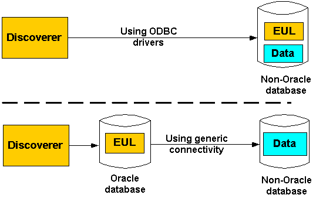

10g (9.0.4)
Part Number B10270-01
Library |
Contents |
Index |
| Oracle Discoverer Administrator Administration Guide (Online Help) 10g (9.0.4) Part Number B10270-01 |
|
This chapter contains information about using Discoverer with non-Oracle databases and Oracle Rdb, and contains the following topics:
Heterogeneous Services are the common architecture and administration mechanisms provided with the Oracle database to enable you to connect to non-Oracle databases.
You connect to non-Oracle databases using Heterogeneous Services in two ways:
For more information about Heterogeneous Services, see the Oracle9i Heterogeneous Connectivity Administrator's Guide.
Generic connectivity is one of the mechanisms supported by the Oracle database Heterogeneous Services feature for accessing non-Oracle databases.
Discoverer users can use generic connectivity to access ODBC or OLE DB (object linking and embedding database) databases.
The non-Oracle database must comply sufficiently with the ODBC standard (for more information about ODBC and OLE DB connectivity requirements, see the Oracle9i Heterogeneous Connectivity Administrator's Guide.
This section contains the following topics:
In previous versions of Discoverer, users could connect to non-Oracle databases using ODBC drivers. The major difference between using ODBC drivers to connect to a non-Oracle database and using the Oracle database generic connectivity feature is the location of the EUL, as follows:

The above diagram illustrates the following:
Discoverer no longer supports the use of native ODBC drivers to connect to non-Oracle databases. You must now use generic connectivity to retrieve data from the non-Oracle database. In other words, the EUL must be stored in an Oracle database. To find out how to move an EUL from a non-Oracle database to an Oracle database, see "How to migrate an EUL from a non-Oracle database (accessed using native ODBC drivers) to an Oracle database (to support generic connectivity)".
Using Discoverer with the Oracle database's generic connectivity feature rather than native ODBC drivers to connect to a non-Oracle database has the following advantages:
Generic connectivity provides access to any ODBC database that is compliant with the ODBC standard. Compliance varies with both databases and ODBC drivers.
For example, you can create a single business area with folders based on tables held in Sybase, DB2 and Oracle databases. An end user query can return data joined across multiple databases.
Discoverer's query prediction uses query statistics that are generated when end users run queries and which are saved in the EUL. Because the EUL is in the Oracle database, Discoverer is able to carry out query prediction for the ODBC data on the Oracle database.
Discoverer uses the batch scheduler in the Oracle database. Because the EUL is in the Oracle database, Discoverer is able to schedule workbooks with ODBC data.
Because the data is brought into the Oracle database you can apply the full set of Oracle functions to the data, instead of being restricted to the functions supported by the non-Oracle database.
Before you can use generic connectivity, you must configure the Oracle database to support generic connectivity.
Note: You should work with your database administrator to set up generic connectivity for Discoverer. However, if you want to use the Enterprise Manager console to set up generic connectivity for Discoverer, you can use the following example (using Enterprise Manager version 2.2).
To set up generic connectivity for Discoverer using Enterprise Manager:
Note: To set the Global Names parameter for Oracle 8.1.7 (or later) Enterprise Edition databases, you change the global_names parameter to false in the init.ora file as follows, then go to step 9:
Work with your database administrator to locate and edit the init.ora file.
The init.ora file is the initialization file that the Oracle database uses when you start up the Oracle database.
The Enterprise Manager console displays the General tab.
The SPFile parameters are the parameters that are stored in the server side persistent file (spfile).
Enterprise Manager displays a message confirming that the parameters have changed.
On Windows, the inithsodbc.ora file is typically located in the <ORACLE_HOME>\hs\admin directory.
The inithsodbc.ora file is an example of an initialization file that the Oracle database uses for Heterogeneous Services connections.
For example, if the database name is DD1, you would rename the copy of the inithsodbc.ora file to initDD1.ora.
HS_FDS_TRACE_LEVEL = <trace_level>
Having made the change, the line will look like this:
# HS_FDS_TRACE_LEVEL = <trace_level>
HS_FDS_CONNECT_INFO = <data source name>
For example, if the ODBC data source name is DD1, you would change the line as follows:
HS_FDS_CONNECT_INFO = DD1
On Windows, the listener.ora file is typically located in the <ORACLE_HOME>\network\admin directory.
For example:
(SID_DESC = (SID_NAME=DD1) (ORACLE_HOME=E:\ORACLE\ORA9I) (PROGRAM=hsagent) )
where:
Note: The above SID_DESC= entry example would be different when using an Oracle 8.1.7 (or later) Enterprise Edition database as follows:
Hint: To help you add new entries to the listener.ora file, Oracle provides a sample source file. You might want to copy text from the sample file, paste it into the corresponding listener.ora file and then modify the entry appropriately. On Windows, the listener.ora.sample file is typically located in the <ORACLE_HOME>\hs\admin\sample directory.
On Windows, the tnsnames.ora file is typically located in the <ORACLE_HOME>\network\admin directory.
For example:
SALES = (DESCRIPTION= (ADDRESS_LIST= (Address=(PROTOCOL=TCP)(HOST=localhost)(PORT=1521)) (CONNECT_DATA=(SID=DD1)) (HS=) ) )
where:
Hint: To help you add new entries to the tnsnames.ora file, Oracle provides a sample source file. You might want to copy text from the sample file, paste it into the corresponding tnsnames.ora file and then modify the entry appropriately. On Windows, the tnsnames.ora.sample file is typically located in the <ORACLE_HOME>\hs\admin\sample directory.
Work with your database administrator to restart the database and tnslistener.
tnsping <data source name>
where <data source name> is the name of the non-Oracle database you want to test.
For example, if the database name is DD1, type the following at the command prompt:
tnsping DD1
The tnsping command should display an OK message. If the tnsping command does not succeed, it will display an appropriate error message indicating why the command did not succeed.
For example, if SQL*Plus is already running, you might type the following at the command prompt:
SQL> CONNECT jchan/tiger@database;
Where jchan is the EUL owner and tiger is the EUL owner password.
SQL> create [public] database link <name> connect to <odbcuser> identified by <odbcpassword> using '<tnsnames entry>';
where:
[public] is an optional argument that creates a public database link. If the [public] argument is not used, the statement creates a private database link. A public database link enforces a lower level of security than if you create a private database link (for more information, see your database administrator).
<name> is the name of the database link.
<odbcuser> is the user on the non-Oracle database.
<odbcpassword> is the password of the <odbcuser> on the non-Oracle database.
<tnsnames entry> is the name used at the start of each tnsnames entry in the tnsnames.ora file (e.g. from the earlier example, the <tnsnames entry> would be SALES).
For example:
SQL> create database link sales_link connect to odbc_username identified by odbc_userpassword using 'SALES';
Note the following:
CREATE DATABASE LINK privilege.
For example, to grant the create private database link privilege in SQL*Plus you would issue the following statement:
SQL> grant create database link to hdsuser;
where hdsuser is the EUL owner
CREATE PUBLIC DATABASE LINK privilege.
For example, to grant the create public database link privilege in SQL*Plus you would issue the following statement:
SQL> grant create public database link to hdsuser;
where hdsuser is the EUL owner.
Whether you need to include a domain as part of the database link name depends on how you configure SQL*Net (for more information about SQL*Net configuration, see your database administrator).
connect to <odbcuser> identified by <odbcpassword> section.
For example:
SQL> select * from PRODUCT@sales_link;
where PRODUCT is the name of a table on the non-Oracle database, and sales_link is the name of the database link to the non-Oracle database specified in the previous step.
Note: Do not use DESC in the SQL statement because DESC is not supported against ODBC and gives unpredictable results.
For more information about generic connectivity, see the Oracle9i Heterogeneous Connectivity Administrator's Guide.
To migrate an EUL from a non-Oracle database to an Oracle database:
For more information, see "Which export/import method to use".
For more information, see "How to set up generic connectivity for Discoverer using Enterprise Manager".
For more information about how to create an EUL, see "Creating and maintaining End User Layers".
For more information, see "Which export/import method to use".
For more information, see "Controlling access to information".
Discoverer users can now connect to the non-Oracle database using generic connectivity and continue to use their existing workbooks and worksheets.
The Transparent Gateway is one of the mechanisms supported by the Oracle database Heterogeneous Services feature for accessing non-Oracle databases.
Discoverer users can use an Oracle Transparent Gateway in conjunction with Heterogeneous Services to access a particular, vendor-specific, non-Oracle database. For example, you would use the Oracle Transparent Gateway for Sybase on Solaris to access a Sybase database that was operating on a Sun Solaris platform.
You must have the appropriate Oracle Transparent Gateway software installed.
For more information about the Oracle Transparent Gateway and how to set it up, see the Oracle9i Database Installation Guide.
Discoverer can access Oracle Rdb without the need for (and restrictions of) open database connectivity (ODBC).
Topics in this section include the following:
To use Oracle Discoverer directly with Oracle Rdb you must install:
You might find that the version of SQL*Net for Oracle Rdb7 requires a special patch with bug fixes specifically for Discoverer (for more information, see your database administrator). Providing you have the necessary support agreement, you can obtain this patch by contacting your Oracle support representative.
SQL*Net for Oracle Rdb7 enables an Oracle Rdb7 server to appear as an Oracle server to the client.
You need to install SQL*Net for Oracle Rdb7 software only once on each server system. You also need to prepare each Oracle Rdb7 database environment by defining the Oracle functions and the emulated Oracle data dictionary to serve with SQL*Net for Oracle Rdb7.
For more information about SQL*Net for Oracle Rdb7, see the following documentation:
This guide helps you set up and use SQL*Net for Oracle Rdb7 software to configure and develop useful connections between SQL*Net clients and Oracle Oracle Rdb7 databases.
This manual contains Oracle SQL/Services Release Notes that are specific to SQL*Net for Oracle Rdb7 Release 7.1.2. The notes describe:
The principal purpose of this manual is to help Discoverer managers (who use SQL*Net for Oracle Rdb software) to understand differences in the Oracle and Oracle Rdb7 SQL dialects. This manual identifies where differences in the SQL dialects might occur, and provides additional information to help you achieve the desired functions.
The following Discoverer features are not supported when using Discoverer with Oracle Rdb:
The following features are partially supported by Oracle Rdb:
| Feature | Reason for non support |
|---|---|
|
Some functions: |
Oracle RDBMS specific |
|
Security - Roles and Users |
Not supported directly, needs to be set up by the Rdb administrator. |
|
|
 Copyright © 2003 Oracle Corporation. All Rights Reserved. |
|